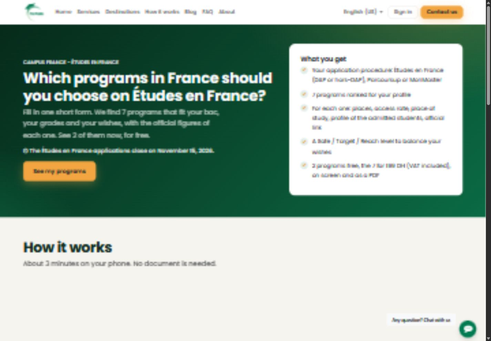
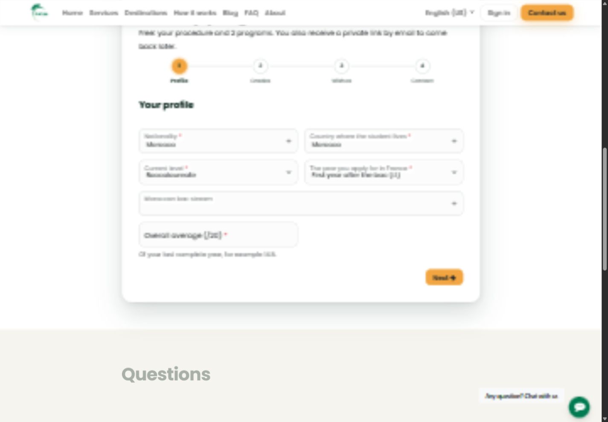
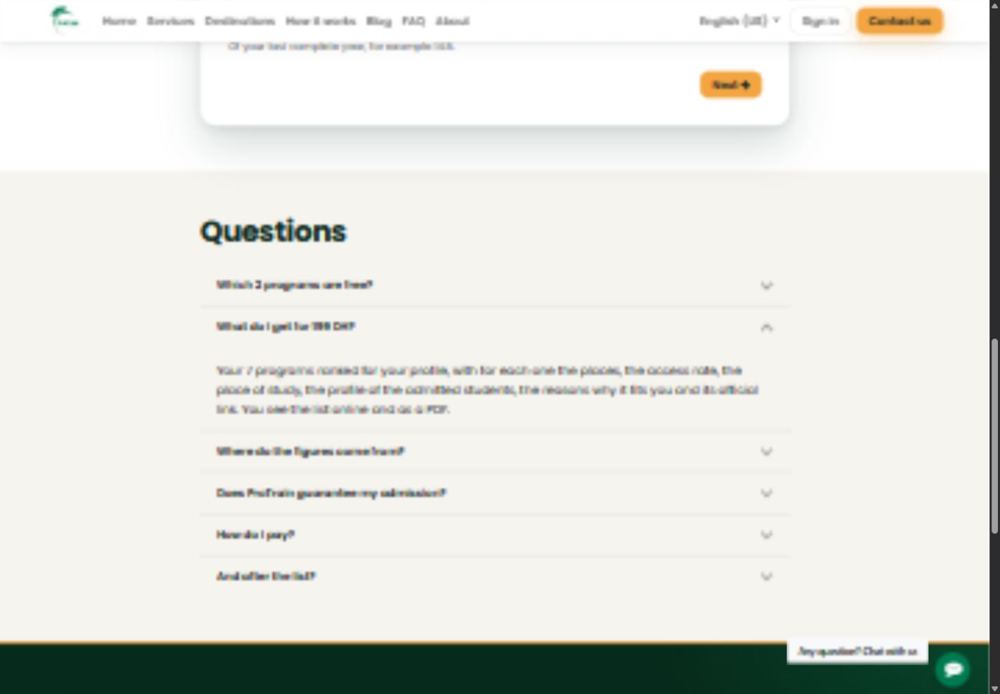
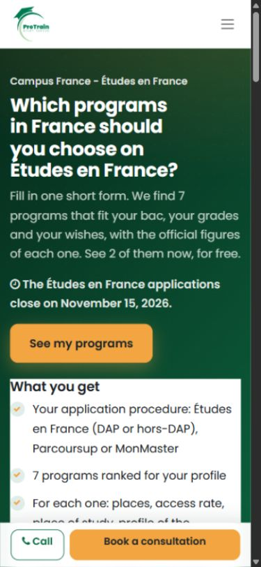
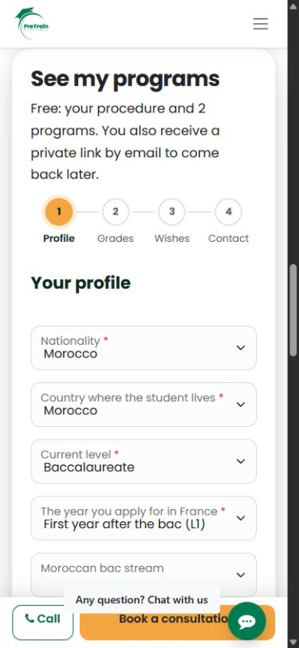
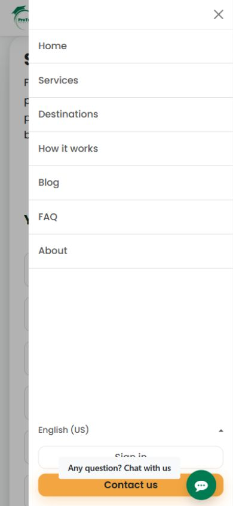

13 November 2026 · Africa/Casablanca
ProTrain Match branding and landing-page QA
Read-only inspection complete. No branding edits applied. The actual landing source is unavailable in the provided workspace. This report proposes exact edits; it is not a reconstructed landing page or a production change.
Inspected landing page · Structured evidence and limits · Exact proposed changes · Source inventory
1. Original page
Headline: Which programs in France should you choose on Études en France?
Subheadline: Fill in one short form. We find 7 programs that fit your bac, your grades and your wishes, with the official figures of each one. See 2 of them now, for free.
The main action “See my programs” goes to the same-page empty four-stage form. The displayed offer is 2 free programs and 7 in the complete report for 199 DH, including VAT, online and as a PDF. The FAQ specifies that the last 2 of the ranked 7 are free.
The promise is understandable, while the tool is not identified as ProTrain Match and human consulting remains prominent in the navigation and fixed mobile bar.
Form: Profile, French and grades, Wishes, Contact. Only Profile was visually exercised. The remaining stages were inspected in the DOM without opening them. Twelve fields are marked required under the page's default Baccalaureate/L1 state: Nationality *, Country where the student lives *, Current level *, The year you apply for in France *, Moroccan bac stream, Overall average (/20) *, Field of study *, Student's first name *, Student's last name *, WhatsApp number *, Email *, I accept that ProTrain processes this data to find the programs and to contact me about them, as described in the privacy policy. If the student is under 18, I am their parent or legal guardian..
2. Branding changes
Applied: none. Five text-only changes are ready for the actual template. The H1, 2 free / 7 full / 199 DH offer, current CTA labels and destinations, form schema, payment, matching, report logic and other pages remain unchanged.
hero-product-identity
#wrap section.s_protrain_page_header p.text-uppercase.small.fw-bold.mb-2
Current
CAMPUS FRANCE - ÉTUDES EN FRANCE
Proposed, not applied
ProTrain Match by ProTrain Company
hero-introduction
#wrap section.s_protrain_page_header p.lead
Current
Fill in one short form. We find 7 programs that fit your bac, your grades and your wishes, with the official figures of each one. See 2 of them now, for free.
Proposed, not applied
ProTrain Match is our academic matching tool. Fill in one short form to find 7 programs that fit your bac, your grades and your wishes, with the official figures of each one. See 2 of them now, for free.
form-context
.o_website_protrain_form_card > p
Current
Free: your procedure and 2 programs. You also receive a private link by email to come back later.
Proposed, not applied
With ProTrain Match, your procedure and 2 programs are free. You also receive a private link by email to come back later.
report-context
#o_shortlist_faq_2
Current
Your 7 programs ranked for your profile, with for each one the places, the access rate, the place of study, the profile of the admitted students, the reasons why it fits you and its official link. You see the list online and as a PDF.
Proposed, not applied
ProTrain Match gives you your 7 programs ranked for your profile, with for each one the places, the access rate, the place of study, the profile of the admitted students, the reasons why it fits you and its official link. You see the list online and as a PDF.
optional-human-consulting
#o_shortlist_faq_6
Current
You enter your wishes on Études en France on your own, or a ProTrain counselor helps you with the application and the interview.
Proposed, not applied
You can use your ProTrain Match list to enter your wishes on Études en France on your own. Human guidance is a separate service from ProTrain Company. If you choose, a counselor can help you with the application and the interview.
3. Files modified
No application or landing-source files were modified. Only audit evidence/proposal/report files in this folder and scoped project continuity notes were written. The existing downloaded homepage reference is not editable landing source and was left intact.
4. Desktop and mobile QA
| Step | Inspection | Result |
|---|
| 1 | Desktop landing, offer and naming | Loads; clear benefit and 2/7/199 offer; product name missing |
| 2 | Desktop mainCTA to empty form | Anchor works; first stage inspected; required marker inconsistency |
| 3 | Free/full report and optional consulting FAQ | Accordions work; free selection and paid report contents explained; separate-service naming proposed |
| 4 | Mobile landing | 390 × 844 reflows; main CTA visible, no horizontal overflow; fixed consultation bar competes with product action |
| 5 | Mobile empty form | Single-column controls fit viewport; first 6 controls have 58 px height; later stages not entered |
| 6 | Mobile navigation and action destinations | Menu opens/closes; destinations inspected. Toggle expansion attribute needs review. Telephone/WhatsApp/contact actions not activated. |
Desktop viewport 1440 × 1000; mobile 390 × 844. Mobile document width 375 matches client width 375; no observed horizontal overflow. The main mobile CTA is approximately 213 × 58 CSS px. No form inputs were changed.

Desktop landing and original offer · 1440 × 1000 viewport
Desktop empty first form stage · No fields edited or Next clicked
Expanded complete-report FAQ · Read-only accordion interaction
Mobile landing and main CTA · 390 × 844 viewport
Mobile empty first form stage · Single-column fields; no input
Mobile navigation open · Opened and closed without following action linksOne full-page capture was rejected because unrevealed scroll-animation regions and fixed-header stitching produced misleading blanks. It is not evidence of a real page layout defect.
5. Errors, warnings and limits
- B01 · High · Branding
No visible ProTrain Match name in the inspected landing text. The visitor sees the agency identity and a matching promise without an explicit product identifier.
Apply the five proposed naming-only changes in the actual source when available.
- C01 · High · Content accuracy
The hero states a November 15, 2026 Études en France deadline. Campus France Maroc's currently indexed official calendar states December 15, 2026 at 23:59 Moroccan time for the connected formations it lists. The blanket landing date needs verification against the relevant applicant procedure.
Confirm the applicable deadline and approve a separate content correction. Do not silently change it in the branding patch.
Official calendar reference
- U01 · Medium · Offer separation
The landing's report offer is clear, but optional human assistance is only mentioned late in the FAQ. Agency consultation links remain prominent, including the fixed mobile bar.
Use explicit tool and separate-service wording in the proposed branding copy. Any consultation CTA hierarchy or funnel change needs separate approval.
- A01 · Low · Required-field clarity
Moroccan bac stream is required in the default Baccalaureate/L1 DOM state, but its visible label lacks the asterisk shown on adjacent required fields.
Consider a label-only required marker correction after approval; do not alter field requirements or validation.
- A02 · Low · Navigation accessibility state
The mobile offcanvas was visibly open and had role=dialog and aria-modal=true while its toggle still reported aria-expanded=false.
Review the toggle state in the actual shared navigation implementation. Do not modify the shared component under this single-page branding task.
No console warning/error entries were captured in this session. No landing build/lint or after-change QA could run without actual source. The unrelated Remotion project was not used as a substitute. Full accessibility, unvisited wizard steps and purchase functionality remain untested.
6. Required input and approvals
Provide the authentic editable landing template/module checkout and its local preview/build/lint instructions to implement the already authorized branding edits. Deadline correction, shared navigation/form-label fixes, or any CTA hierarchy/funnel change require separate scope approval.
7. Safety confirmation
No personal data entered, form fill, Next/Submit click, form submission, fake profile, matching, report generation, payment, customer record mutation, deployment or publication occurred. Live interactions were limited to read-only page capture, anchor navigation, FAQ expansion and mobile menu open/close.